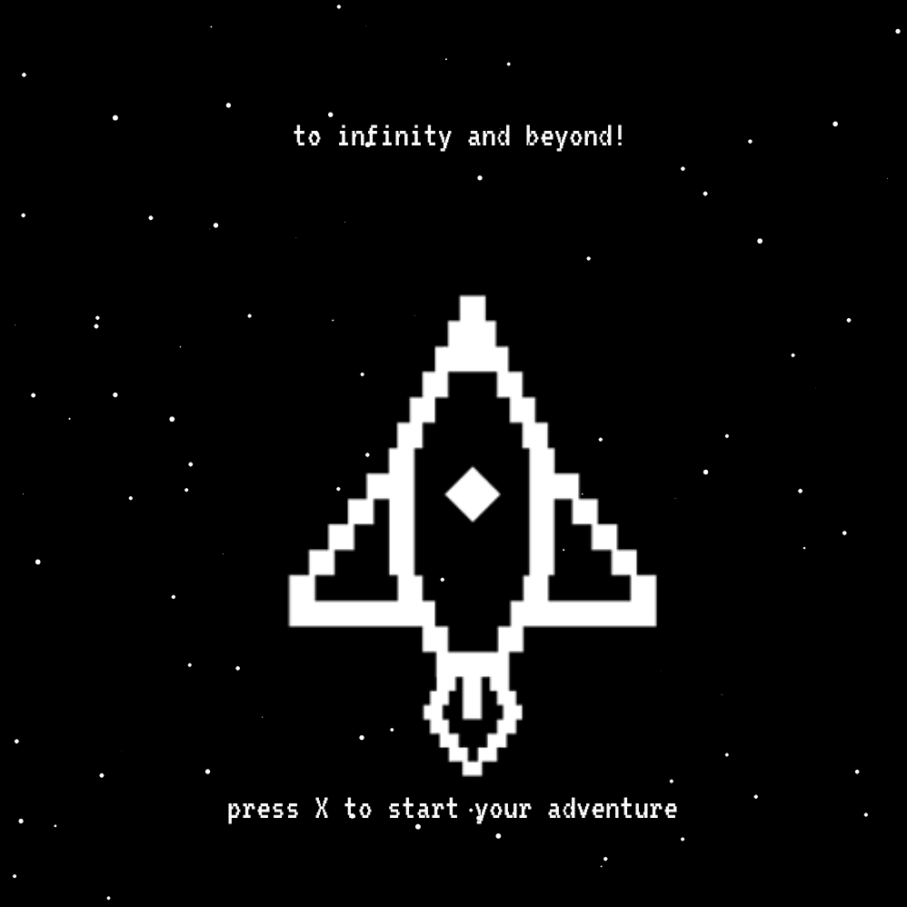

MY WORK
Here are some of my latest school work from cegep and university
Click on the images to make them bigger and the underline title to see the interaction

Eddy De Pretto - Vinyl Cover
 Programmation game with JavaScript
Atom // Illustrator">
Atom // Illustrator">
Fictive project - Creation of a training application and the design for the interface
Illustrator // After Effects">
Illustrator // After Effects">
Fictive project - Creating a new logo for the brand and developping their new image
Illustrator // InDesign // Photoshop">
Illustrator // InDesign // Photoshop">
Budweiser - Branding
Research of informations and statistics about the crossfit to create an infographic
Illustrator" >
Illustrator" >
Crossfit - Infographic
Fictive project - Team project - Conceptualization of the theme for the 3rd year of graphic design at Cegep Ahuntsic. I worked on the signature and the visual of the poster
Illustrator // Photoshop">
Illustrator // Photoshop">
Elixir - Advertising Campaign
Poster to sensibilize the public of their health for the 'Heart and Stroke foundation'
Illustrator">
Illustrator">
AVC - Advertising Poster
3rd place to the Recueil 'Pour L'instant' contest
Indesign // Illustrator // Photoshop">
Indesign // Illustrator // Photoshop">
Pour L'instant - Book Cover
Creation of illustrations and animation for the song 'Wake Me Up Before you Go'
Illustrator // After Effects">
Illustrator // After Effects">
Fictive project - creation of a poster for the theater pieace 'Hosanna' by Michel Tremblay
Photoshop">
Photoshop">
Hosanna - Digital Illustration
Fictive project - Creation of a signature and packaging for the bath product Calin for children
Illustrator // Photoshop">
Illustrator // Photoshop">
Calin - Packaging

Terre A La Lune - Typography